新手指南
1.平台介绍
八斗网（badoue）是深圳百士兴科技有限公司推出的互联教育产品,帮助培训机构、在线网校提供推广招生渠道，为广大的在职员 工、学生、业余爱好者等渴望学习者提供专业化，信息化，人性化的020模式平台解决学习和培训。
2.如何注册
(1)首页点击免费注册：
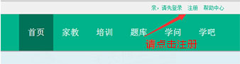(2)填写注册信息：
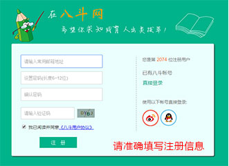3.完善资料
点击注册完成后完善个人资料
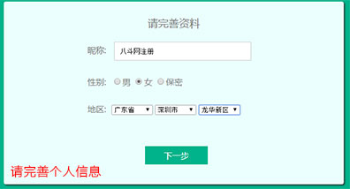常见问题
1.忘记密码
如果您的密码忘记了，可以点击登陆框旁边的[忘记密码？]按钮。
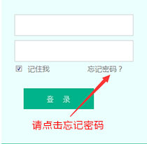第一步：输入注册时使用的邮箱地址
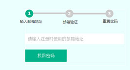第二步：邮箱验证，激活重置密码
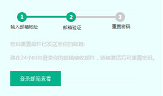第三步：重置密码
第四步：完成/立即登陆八斗网
2.如何认证
点击会员中心的"申请认证"或者到认证设置页面上填写认证信息
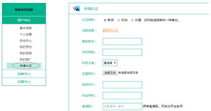热门问题
1.什么是学豆
学豆是八斗网推出的一种虚拟货币，学豆可用于在线考试，文库下载，主要通过上传收费资料获得（每上传1个资料，有用户下将获得设置 学豆）设置学豆下载的目的是为了鼓励大家积极分享，只有每个人都行动起来，大家才能获得更多更好的优质资料，也可获得更多的知识财富。
2.注册认证八斗网会员有什么好处？
注册八斗网会员后您可以任意浏览网站所有的资讯、享受八斗网免费客户服务、享受在线题库的免费做题的特权、会员认证享受网站免费信 息发布体验的特权及享受会员中心各项特色功能和服务。
3.我怎么不能做题？
在线题库试题为免费和收费两种，如果您不能做题就需要查看您是否是游客状态，在线题库需要注册会员才能在线做题，因此您只要登陆就 能正常做题，收费试题需有积分才能在线做题.
关于家教
1.家教平台流程
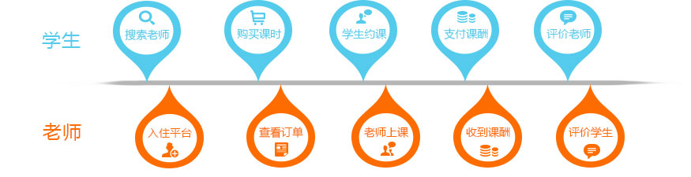2.我可以选择的上课方式有哪些？
我们平台提供了三种授课方式，分别为老师上门、学生上门、协商地点。老师可以选择选择其中一种(以上)作为他的授课方式，你可以根据自 身的需求选择老师设置的授课方式，不同授课方式价格或将会不同。
3.老师是要怎么排课的？
我们平台为老师提供了排课功能。学生在给下单并支付完成后，在"订单"-"执行中"订单列表中对订单进行排课。学生的上课时间和老师 要进行排课的时间或将有冲突（其他老师也会给该生排同一时间段的课），因此建议事先跟学生沟通好，做好时间管理。
4.课酬评价
（1）什么时候付费？怎么付费？付给谁？
购买订单时你为订单支付的全部金额将会暂时存在我们平台上，每次课程结束后你需要确认支付本节课酬，这样本节课酬将会打到老师的平 台账户。
（2）评价打分
评价分为打分制（好评、中评和差评三种），评价中还可以附上图片，学生可以通过评价来了解老师，老师可以通过积累评价信用吸引更多 的学生来了解课程。评价是双向的，学生可以评价老师，老师也可以评价学生。
关于培训
1.培训平台流程
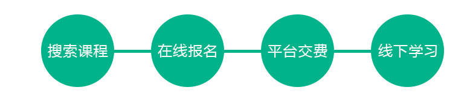2.优惠课程
登陆网站—培训—优惠课程，即可快速进入优惠课程页面，查看购买课程的信息可享受优惠精品课程
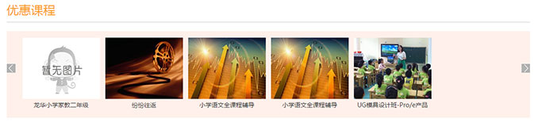3.支付、网上报名查询
登陆网站—会员中心—消费中心，即可快速进入订单查询页面，查看支付详情，网上报名订单
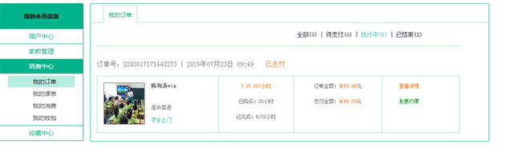关于学吧
1.什么是八斗问答？
八斗问答是学吧社区为用户提供的一个互动性很强的问答应用，可以加强学生与老师、学生与学生的互助学习及交流，我们鼓励有价值，高 质量的提问，谢绝低质、无意义的提问，对于恶意提交无意义、涉及政治、色情、暴力或带有侮辱性语言的提问，我们将删除提问并根据情节严 重程度对提问账号进行永久性的封禁，请各位会员谨记。
2.如何提问
（1）在哪可以进行提问?
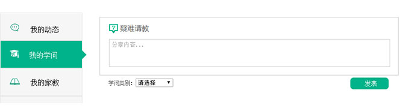(2)提问方法
用户点击"向TA提问"按钮，弹出如下提问窗口，对老师提问。
(3)接受问答
当老师回复了您的提问后，会在顶部导航"会员中心"上进行圆点提示，点击进入个人中心后，在我的问答列表中查看老师的回答，新的回答 会有新回答提示。
(4)追问
如果您对老师的回答还想有更多的交流，您可以点击追问，进一步和老师进行交流，您最多可以追问一次。
3.问答规则
（1）提问规范
学吧社区鼓励有价值的、高质量的提问，拒绝无意义、不清晰的提问，问答中涉及敏感信息、政治、暴力、色情元素的，我们有权删除问答， 并根据情节严重程度封禁提问账号。
提问应遵循真实、客观、简洁、明确、规范的原则.
（2）什么样的提问会被删除
（1）敏感、暴力、色情内容
（2）含有侮辱性词汇的提问
（3）含有联系方式、广告、推广性内容的，例如电话、QQ号、微信号、网址的。
（4）无意义的提问，例如"sajdjsakd"、"就单撒娇的卡萨"、"我是李刚"等。
在线考试
1.在线考试完后在哪看答案？
在线考试试卷一般是最新最及时的各类考试真题，题库添加估分卷是为了方便考生及时了解最新试题信息并进行自测估分，估分卷会逐渐根 据官方网站公布的正规答案进行添加，添加答案以后的估分卷就成为了真题卷。
2.如果我对在线题库中试题有疑问该怎么办？
会员对某一套题有疑问，可以点击这套题旁边的[学吧]按钮，即可进入学吧的八斗问答界面进行提问，届时会有专业的老师及热心会员为您 解答。
3.在线考试做题页面为什么会显示载入错误？
这个可能是系统出错，请尝试刷新或重新进入该页面即可，如还不能解决，请退出再登陆。
4.如何上传在线考试试题？
点击进入会员中心，点击在线考试上传试卷按钮，会员可免试上传免费试题（收费试题可免费上传10次）。
会员中心
1. 会员怎么获取积分和学豆？
会员注册八斗网会员后，可在家教、培训、在线考试、学问等栏目完成相应的任务，可相应的获取积分和学豆。积分等级越高可享受网站更 多优惠福利。
2.什么是任务中心？
任务中心就是系统不定期提供的一些任务，您可以通过做任务来获取经验值和其他奖励，任务中心包括基本任务、每日任务和活动任务，您 点击任务中心即可及时查看所有系统任务、做任务及了解任务完成情况。
3.如何进行个人订单管理？
点击进入会员中心，点击财务管理按钮，然后点击消费记录按钮，即可查看查看个人订单
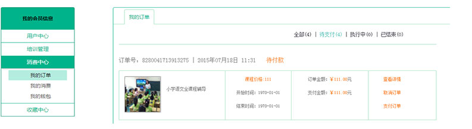4.如何进行充值及充值步骤
点击进入会员中心，点击财务管理按钮，然后点击充值按钮，即可进行在线充值（充值支持支付宝支付）
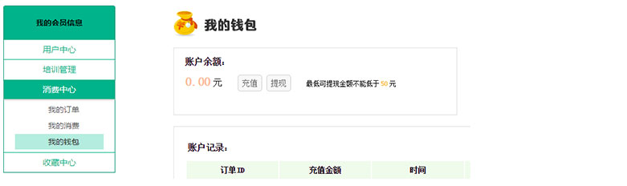